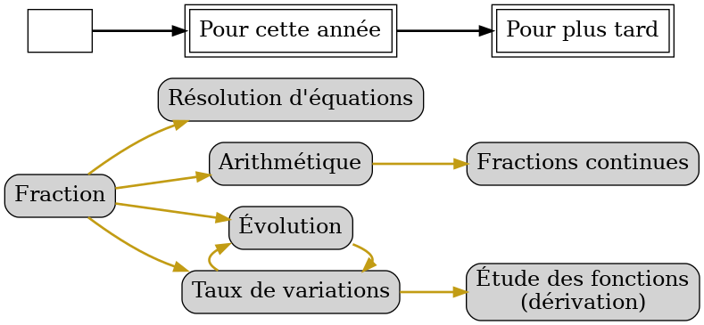
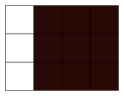
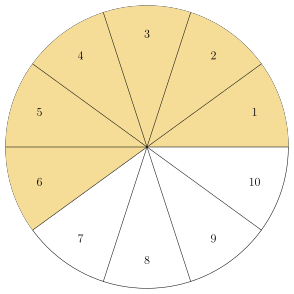
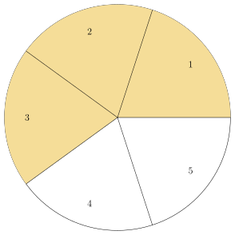
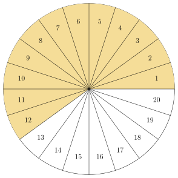
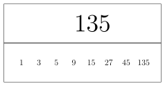
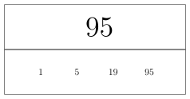
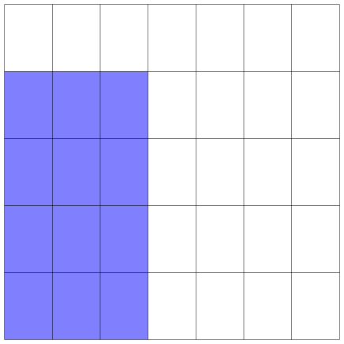
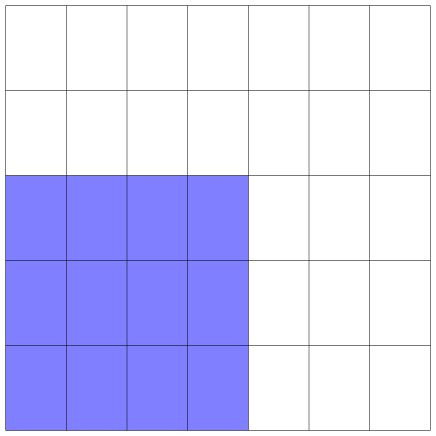
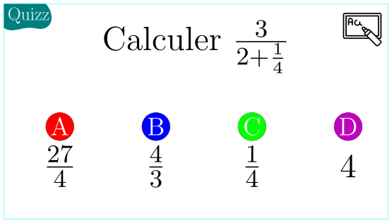

Méta fraction
1. Cours sur les fractions
1.1. À quoi servent les fractions ?

1.2. La fraction vue comme une division.
1.2.1. Exemple avec une tablette de chocolat

Je mange \(3\) carrés de chocolat dans une tablette qui en contient \(12\). Quelle est la proportion de chocolat que j'ai mangée ?
\(\frac{3}{12} = 3 \div 12 = 0,25 = 25\%\)
1.2.2. Définition
Soit \(a\) et \(b\) deux nombres. On suppose \(b\) différent de \(0\). Alors la notation \(\frac{a}{b}\) est le résultat de l'opération de \(a\) qui est divisé par \(b\). Autrement dit : \[ \frac{a}{b} = a \div b \]
Pourquoi demande-t-on à ce que \(b\) soit différent de \(0\) ?
Parce que l'on ne peut pas diviser par \(0\).
1.3. La fraction vue comme une solution d'une équation
1.3.1. Définition
Soit \(a\) et \(b\) deux nombres. On suppose que \(b\) est différent de \(0\).
Alors l'équation \(bx = a\) admet une seule solution, donnée par \(x = \frac{a}{b}\).
Pourquoi faut-il supposer que \(b \not = 0\) ?
Si \(b=0\) alors \(bx = 0\) quelque soit \(x\). Donc, si \(a\) est différent de \(0\), c'est impossible de trouver une solution. C'est pour cela qu'il faut supposer que \(b \not = 0\).
1.3.2. Exemple
J'ai mangé une certaine proportion \(x\) de ma tablette de chocolat, qui contient \(12\) carrés de chocolat. Quelle proportion dois-je prendre pour manger exactement \(3\) carrés de chocolat ?
Si l'on multiplie la proportion \(x\) par le nombre de carrés, ici \(12\), on obtient le nombre de carrés mangés, c'est-à-dire \(3\).
Ainsi, on cherche la proportion \(x\) telle que : \[ 12 x = 3 \] Donc la proportion recherchée est \(x = \dfrac{3}{12}\)
J'ai deux balles noires dans une urne parmi \(5\) balles au total. Je tire une balle au hasard dans l'urne, et toutes les balles sont indiscernables. Quelles sont les chances d'obtenir une balle noire ?
J'ai deux chances sur cinq (\(\frac{2}{5}\)) de tomber sur une balle noire. En effet, il y a deux balles qui sont noires parmi les \(5\). De plus, toutes les balles de l'urne ont autant de chances d'être tirées.
1.4. Propriétés magiques des fractions.
1.4.1. L'égalité entre deux fractions sur une tablette de chocolat
Si l'on reprend la tablette de chocolat rencontrée plus haut :

On s'aperçoit que \(\frac{3}{12}\) représente aussi le quart de notre tablette. Donc on peut en déduire que : \[ \frac{3}{12} = 1 \text{ tablette divisée par } 4 = \frac{1}{4} \]
Puisque l'on peut décrire la proportion mangée de la tablette de deux manières différentes (en comptant le nombre de carrés mangés, ou bien en regardant le nombre de colone mangée) on en déduit la propriété fondamentale suivante :
\[ \frac{3}{12} = \frac{1}{4} \]
1.4.2. L'égalité entre fractions sur un camembert.
Étudions maintenant le camembert coulant découpé en \(10\) tranches égales. Je me réserve \(6\) tranches de ce camembert.
Voici la part que je me suis réservée :

Figure 1 : Quelle est la proportion du camembert que je me suis réservée ?
Mais on peut aussi couper le cambert en \(5\) tranches égales, voici ce qui se passe quand je choisi \(3\) tranches parmi les \(5\) :

Figure 2 : C'est exactement le même camembert, mais j'ai coupé en \(5\) tranches égales, et j'ai pris cette fois \(3\) parts.
Que remarques-tu dans les deux situations ?
Qu'est-ce qui a changé ? Qu'est-ce qui n'a pas changé ?
La proportion de fromage dans les deux cas est identiques* ! Puisque la proportion est donnée par la fraction, on peut en déduire une *égalité de fraction. Laquelle ?
Grâce aux camemberts, on peut fierement annoncer que : \[ \dfrac{6}{10} = \dfrac{3}{5} \]
Si je coupe le cambert en \(20\) parts égales, combien de part je dois me réserver pour avoir la même proportion que dans les situations précédentes ?
Vous pouvez regarder l'image de la figure ci-dessous.

Figure 3 : Réponse illustreé
Quelles sont les trois fractions égales que nous avons ainsi mise en évidence ?
\[ \frac{3}{5} = \frac{6}{10} = \frac{12}{20} \]
On peut illustrer l'égalité de fraction avec ces trois images :
Plus généralement, quelle est la propriété sur les fractions que l'on vient de mettre en évidence ?
1.4.3. Simplifier une fraction : la théorie .
Grâce à la partie précédente, on peut donner une définition de deux fractions égales.
Soit \(a\) et \(b\) deux nombres, tel que \(b\) est non nul. Alors, pour tout nombre \(k\), nous avons : \[ \frac{a}{b} = \frac{k\times a}{k \times b} \]
Réciproquement, si deux fractions sont égales, alors il existe un nombre \(k\) tel que le numérateur et le dénominateur de la première fraction soit \(k\) fois plus grand que le numérateur et le dénominateur de la deuxième fraction.
Donnez, à l'aide des situations fromagères précédentes, un exemple de l'utilisation de la proposition en proposant des valeurs de \(a\), \(b\) et \(k\) pertinentes.
Quelles sont les fractions parmi la liste ci-dessous qui sont égales ? \[ \frac{20}{24}\quad \frac{8}{20}\quad \frac{30}{36}\quad \frac{10}{12}\quad \frac{16}{6}\quad \frac{4}{10}\quad \]
Soit \(p\) et \(q\) sont deux fractions telles que \(p = \dfrac{a}{b}\) et \(q = \dfrac{c}{d}\).
Alors, les deux fractions \(p\) et \(q\) sont égales (\(p = q\)) si et seulement si \(a \times d = b \times c\).
Pour affiner votre compréhension, vous pouvez vous tester sur les questions suivantes. Attention, les dernières questions sont bien plus difficiles !
- Est-il possible que deux fractions soient égales alors qu'elles n'ont pas le même dénominateur ?
- Est-il possible que deux fractions soient égales alors qu'elles n'ont pas le même numérateur ?
- Vérifier à l'aide de la proposition précédente l'égalité : \(\frac{12}{32}=\frac{6}{16}\).
- Vérifier à l'aide de la proposition précédente que les fractions \(\frac{19}{48}\) et \(\frac{6}{16}\) ne sont pas égales.
- Vérifier à l'aide de la calculatrice que \(9 \times 56 = 24 \times 21\). Donner plusieurs égalités de fractions à partir de ce résultat.
- Si \(a\) et \(b\) sont deux nombres entiers divisibles par deux, que peut-on dire de \(p = \frac{a}{b}\) ?
- Si \(p\) et \(q\) sont deux fractions égales, que peut-on dire de \(p'\) et \(q'\) les fractions obtenues en échangeant le numérateur et le dénominateur de \(p\) et \(q\) respectivement ?
- Si \(\dfrac{a}{b} = \dfrac{c}{d}\), que peut-on dire de \(\dfrac{d}{b}\) et \(\dfrac{c}{a}\) ?
- Si on note \(p = \frac{a_1}{a_2}\) et \(q=\frac{a_3}{a_4}\) et on suppose que \(p = q\) peut s'écrire de façon raccourcie \((1, 2, 3, 4)\). Montrer alors que \((2, 1, 4, 3)\) est aussi une situation d'égalité. Faites la liste des toutes les égalités sous la forme \((n, m, l, k)\) où \(n, m, l, k\) sont des entiers entre \(1\) et \(4\) tous différents.
Soit \(p = \frac{a}{b} = \frac{c}{d} = q\). Alors, en multipliant ces égalités par les dénominateurs de chaque fraction (c'est à dire par \(b \times d\)), on prouve la démonstration. Pour la réciproque il suffit de faire l'opération inverse (une division).
Soit \(p = \frac{a}{b}\) une fraction. Alors, on dit que \(p\) est sous la forme irréductible si et seulement si \(a\) et \(b\) n'ont pas de diviseur commun.
Soit \(\dfrac{a}{b}\) une fraction. Soit \(d = \mathrm{pgcd}(a, b)\). Soit \(a'= d \times a\) et \(b' = d \times b\). Alors, \(\dfrac{a'}{b'}\) est la forme irréductible de \(\dfrac{a}{b}\).
On souhaite simplifier la fraction \(\frac{135}{95}\). On peut faire la liste des diviseurs de \(135\) et \(95\) :


On voit donc que \(\textrm{pgcd}(135, 95) = 5\), donc on sait que notre fraction est irréductible si et seulement si on divise \(135\) et \(95\) par \(5\). Autrement dit, le calcul suivant donne la forme irréductible de \(\frac{135}{95}\) : \[ \frac{135}{95} = \frac{5 \times 27}{5 \times 19} = \frac{27}{19} \]
1.5. Calculs avec les fractions
1.5.1. L'addition de deux fractions
- Voir l'addition de fraction sur un schéma.
Imaginons que l'on effectuer le calcul suivant : \[ S = \frac{5}{6} + \frac{7}{12} \] On vérifie que les deux fractions sont irréductibles (\(5\) et \(6\) n'ont pas de facteur en commun, pareil pour \(7\) et \(12\)).
On peut représenter ces deux fractions par des parts de rectangles comme il suit :
On souhaite compter la proportion que représente la somme des rectangles gris. Puisqu'il n'ont pas la même largeur, on ne peut pas comparer les parties grisées des deux situations !
Pourquoi les deux rectangles n'ont pas été découpés avec le même nombre de part ?
Anticipe la suite : comment découper l'un des deux rectangles afin que les deux rectangles soit découpés en autant de part, mais en conservant la proportion grisée de chacun d'entre eux.
On se rappelle que l'on peut transformer \(\frac{5}{6}\) en \(\frac{10}{12}\) puisque \(\frac{5}{6} = \frac{2 \times 5}{2 \times 6} = \frac{10}{12}\). Ainsi, la fraction \(\frac{5}{6}\) peut se représenter par les situations suivantes :
(vous devriez revoir la partie avec les fromages si ce passage n'est pas clair)
Et maintenant les deux rectangles sont comparables :
On compte exactement \(10 + 7 = 17\) douzième de rectangle en comptant les parties grisées (qui représente chacune un douzième du rectangle total) donc, on a : \[ \frac{10}{12} + \frac{7}{12} = \frac{17}{12} \] Si on revient à notre question de départ :
\[ S = \frac{5}{6} + \frac{7}{12} = \frac{10}{12} + \frac{7}{12} = \frac{17}{12} \] Et \(\frac{17}{12}\) est irréductible, car \(17\) et \(12\) n'ont pas de facteur en commun.
Comment pouvait-on savoir qu'il suffisait de multiplier \(6\) par \(2\) pour obtenir \(12\) ? Autrement dit, comment déterminer l'opération qui sert à transformer chaque fraction pour qu'elle ait le même dénominateur ?
Il faut trouver le plus petit commun multiple entre \(6\) et \(12\). Autrement dit, quel est le nombre qui appartient à la fois à la table de \(6\) et à la table de \(12\) et qui est le plus petit. Il se trouve que ce nombre est \(12\). Ainsi, il faut multiplier \(6\) par \(2\) et \(12\) par \(1\).
Tracer le plus précisemment possible les situations suivantes, et trouver la somme dans chaque cas :
- \(\frac{1}{3} + \frac{1}{9}\)
- \(\frac{1}{2}+\frac{1}{3}\)
- En théorie
Puisque \(p = \frac{a}{b}\) et \(q = \frac{c}{d}\) sont deux nombres, alors \(p + q\) est un calcul qui existe. De plus, \(p + q\) est une fraction, et on a en général : \[ p + q = \frac{a}{b} + \frac{c}{d} = \frac{ad + cb}{bd} \]
Cette proposition n'est jamais à appliquer par cœur, car elle est loin d'être optimale pour les calculs.
1.5.2. La multiplication de deux fractions
- Voir la multiplication de fractions sur un schéma
On cherche à comprendre comment calculer le produit \(P\) suivant : \[ P = \frac{4}{5} \times \frac{3}{7} \] Comment peut-on visualiser ce calcul ?
Très souvent, on peut comprendre une multiplication par le calcule de l'aire d'un rectangle. Pour rappel, si un rectangle est de longueur \(l\) et de largeur \(L\), alors son aire se calcule par \(l \times L\). Ici, on va donc prendre \(l = \frac{4}{5}\) et \(L = \frac{3}{7}\).
Ainsi, on va insérer dans un carré de coté \(1\), un rectangle dont l'aire nous intéresse.
Considérez la situation suivante :

Quelle est l'aire du carré ?
Quelle est l'aire d'un sous rectangle ?
L'aire du carré est \(1\), puisque chaque côté mesure \(1\).
Chaque sous rectangle est identique. On a donc partagé le carré en \(5 \times 7 = 35\) sous-rectangles identiques. Ainsi, un rectangle admet une aire de \(\frac{1}{35}\).
Or, on compte \(4 \times 3 = 12\) petits rectangles en bleu. Il vient : \[ P = \frac{4}{5} \times \frac{3}{7} = \frac{12}{35} \]
Quelle multiplication de fractions s'y cache dans la situation suivante ? Quel est le résultat de cette multiplication ?

Donner un exemple de produit de fraction telle que l'aire en bleu soit plus grande que la moitié de l'aire du carré.
1.5.3. La division de deux fractions
- Avec des exemples
Commençons par un exemple.
Combien y'a-t-il de tiers (\(\frac{1}{4}\)) dans trois-quart (\(\frac{3}{4}\)) ?
On peut répondre assez intuitivement \(3\), puisque : \[ \frac{3}{4} = \frac{1}{4} + \frac{1}{4} + \frac{1}{4} = 3 \times \frac{1}{4} \]
À partir de cet exemple, on peut donc en conclure que :
\[ \frac{3}{4} \div \frac{1}{4} = 3 \] Que l'on peut écrire comme un étage de fractions, puisqu'une division est une fraction.
\[ \frac{\frac{3}{4}}{\frac{1}{4}} = 3 \]
Mais comment répondre à la question :
Combien y'a-t-il de tiers dans une moitié ?
On cherche à calculer \(\frac{1}{2} \div \frac{1}{3}\). Comment faire ?
- Diviser revient à multiplier par l' inverse
Soit \(a\) et \(b\) deux nombres différents de \(0\).
Alors : \[ \frac{a}{b} = a \div b = a \times \frac{1}{b} \] Autrement dit, diviser par \(b\) revient à multiplier par \(\frac{1}{b}\).
Soit \(b\) un nombre non nul. Alors, on appelle l'inverse d'un nombre le nombre \(\frac{1}{b}\). L'inverse de l'inverse de \(b\) est \(b\). Autrement dit : \[ \frac{1}{\frac{1}{b}} = b \]
Soit \(\frac{p}{q}\) une fraction, alors son inverse est égal à \(\frac{q}{p}\).
On veut montrer que : \[ \frac{1}{\frac{p}{q}} = \frac{q}{p} \] Or :
\begin{align*} \frac{1}{\frac{p}{q}} &= \frac{q}{q\times \frac{p}{q}}\\ \frac{1}{\frac{p}{q}} &= \frac{q}{p} \end{align*}C'est ce que l'on voulait démontrer.
- Diviser des fractions : la méthode.
Si on revient à notre problème précédent :
On cherche à calculer \(\frac{1}{2} \div \frac{1}{3}\). Comment faire ?
On voit maintenant que l'on peut mener les calculs comme il suit :
\[ \frac{1}{2} \div \frac{1}{3} = \frac{\frac{1}{2}}{\frac{1}{3}} = \frac{1}{2} \times \frac{3}{1} = \frac{1}{2} \times 3 = \frac{3}{2} \]
Donc on peut dire qu'il y a \(1,5\) tiers dans une moitié. Cette phrase est beaucoup plus compliquée à comprendre que le calcul fait dans l'exemple précédent. C'est l'intérêt du calcul : on obtient le résultat sans maux de crâne !
- Il y a combien de cinquième(s) dans le quart ?
- Quelle est la solution à l'équation \(\frac{1}{2} x = \frac{1}{3}\) ?
- Donner un exemple intéressant d'une division entre deux fractions qui admet comme résultat \(2\).
- Montrer que l'inverse d'un produit est égale aux produits des inverses (encore une phrase bien plus compliquée à comprendre qu'à réaliser en calcul, ne soyez pas surpris si vous ne la comprenez pas du premier coup).
1.6. Erreurs possibles avec les fractions ! fiche
1.6.1. Simplification malhonnête
- Forme de l'erreur
On peut simplifier une fraction si et seulement si le numérateur et le dénominateur partage un même facteur en commun.
S'il n'y a aucun facteur commun entre le dénominateur et le numérateur, alors la fraction est dite irréductible (c'est-à-dire que l'on ne peut pas la réduire, la simplifier).
- Si le numérateur et le dénominateur sont des nombres
Dans le cas suivant, je peux effectuer la simplification par \(5\) : \[ \frac{65}{120} = \frac{5 \times 13}{5 \times 24} = \frac{\not 5 \times 13}{\not 5 \times 24} = \frac{13}{24} \] car \(65\) et \(120\) admettent \(5\) comme facteurs communs.
La simplification suivante est fausse : \[ \frac{18}{29} = \frac{5 + 13}{5 + 24} \not = \frac{13}{24} \] Car \(5\) n'est pas un facteur commun de \(18\) et \(29\).
- Si le numérateur et le dénominateur sont des expressions
Voici une simplification correcte (si l'on admet que \(x \not = 0\): \[ \frac{x^2 - x}{2x^2 - 3x}=\frac{x(x-1)}{x(2x-3)}=\frac{x-1}{2x-3} \] car le \(x\) est un facteur commun de \(x^2 - x\) et \(2x^2 - 3x\), on peut donc le simplifier (et \(x\) est non nul, puisqu'on l'a supposé ainsi).
Voici une factorisation incorrecte : \[ \frac{x^2 - 1}{2x + 3} \not = \frac{x - 1}{2 + 3} \] car \(x\) n'est pas un facteur de l'expression \(x^2 - 1\), ni de \(2x + 3\).
- Pourquoi je fais cette erreur ? Comment se corriger ?
Plusieurs causes possibles, dont :
- Tu confonds les opérations de multiplication avec celle d'addition. Il faut revoir le sens du mot «facteur commun» en mathématique.
- Tu es allé trop vite dans tes calculs, et tu as voulu enlever des nombres ou des expressions qui étaient présents au numérateur et au dénominateur. Mais il ne suffit pas d'être présent pour être un facteur commun.
- Tu as oublié de factoriser correctement une expression pour faire apparaître les facteurs communs entre une expression au numérateur et une expression au dénominateur.
Dans quel cas te trouvais-tu ?
1.6.2. L'addition de fraction numérateur-numérateur, dénominateur-dénominateur
- Forme de l'erreur.
On peut retrouver l'erreur sous plusieurs forme. Avec des chiffres, on peut imaginer une copie d'un élève qui comporte cette égalité : \[ \frac{1}{4} + \frac{3}{5} = \frac{1 + 3}{4 + 5} \] qui est *fausse* !
- Pourquoi je fais cette erreur ? Comment se corriger ?
Plusieurs causes possibles, dont :
- Tu confonds l'addition avec la multiplication (confusion d'opérations). Il faut revoir la fiche associée « Comment ne plus jamais confondre l'addition et la multiplication».
- Tu appliques la formule de la multiplication à celle de l'addition. (confusion dans la méthode). Dans ce cas, tu penses à tort avoir compris l'addition et la multiplication d'une fraction, mais tu les confonds encore. Il faut prendre le temps de reprendre les explications calmement du cours sur les fractions.
1.6.3. Je laisse des fractions non simplifiées dans mes calculs.
- Forme de l'erreur
Dans un calcul, à la place de \(\frac{1}{3}\), je laisse \(\frac{5}{15}\) dans mes calculs.
Bien qu'il est vrai que \(\frac{1}{3} = \frac{5}{15}\), il faut toujours simplifier au maximum vos fractions. Il y a plusieurs avantages :
- Cela simplifie les calculs,
- Cela raccourcit l'écriture des calculs, et ils sont plus faciles à relire.
- Cela montre que vous avez compris l'égalité entre les fractions.
- Cela évite de traîner des fractions qui sont en fait des nombres entiers par exemple \(\frac{10}{5} = 2\)
- Pourquoi je fais cette erreur ? Comment se corriger ?
Tu fais cette erreur surement parce que tu préfères ne pas te tromper dans ta simplification, au prix de laisser une fraction (potentiellement) énorme.
Les simplifications qui donnent des entiers sont pourtant essentielles. Ainsi, il faut apprendre à faire correspondre ces fractions : \[ \frac{24}{6} \quad \frac{12}{6} \quad \frac{21}{7} \quad \ldots \] À des entiers. Pour cela, remarque que systématiquement, le numérateur est dans la table de multiplication du dénominateur (\(24\) est dans la table de \(6\) , \(21\) est dans la table de \(7\), etc).
2. Exercices
2.1. Compléter par un nombre (fractions équivalentes)
Compléter par le bon nombre :
\frac{72}{56} = \frac{9}{\ldots}
\frac{12}{\ldots} = \frac{132}{66}
\frac{36}{20} = \frac{9}{\ldots}
\frac{54}{\ldots} = \frac{9}{10}
\frac{9}{\ldots} = \frac{63}{14}
\frac{84}{\ldots} = \frac{7}{12}
\frac{11}{9} = \frac{66}{\ldots}
\frac{11}{\ldots} = \frac{44}{40}
\frac{24}{\ldots} = \frac{6}{10}
2.2. Questions
